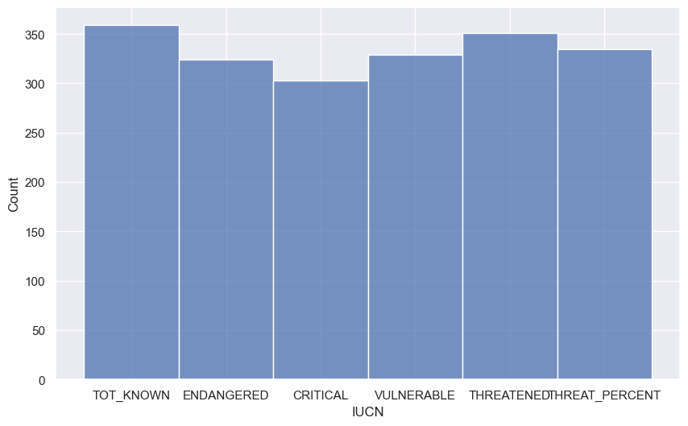
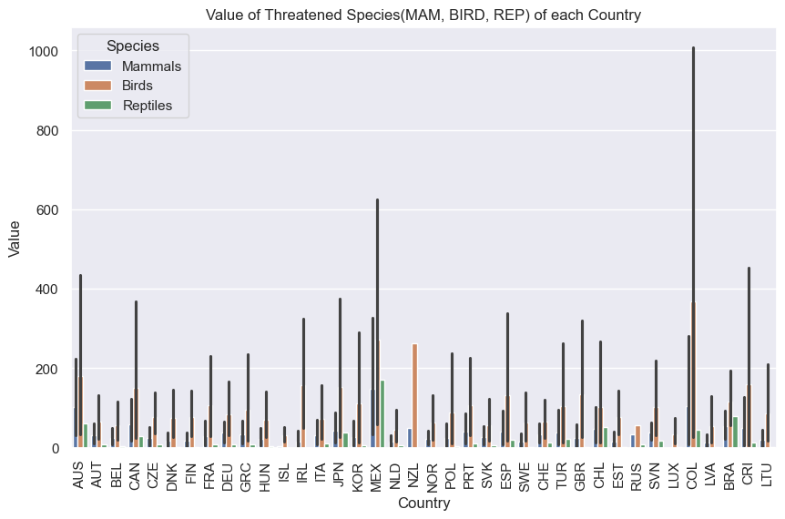
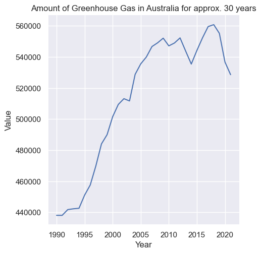
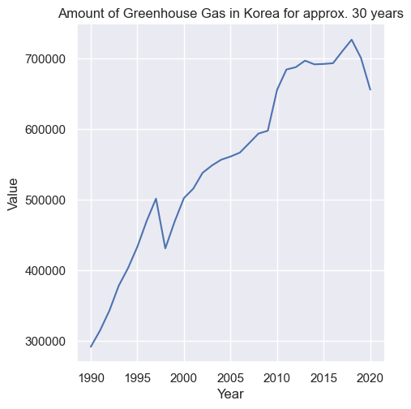
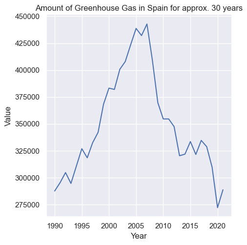
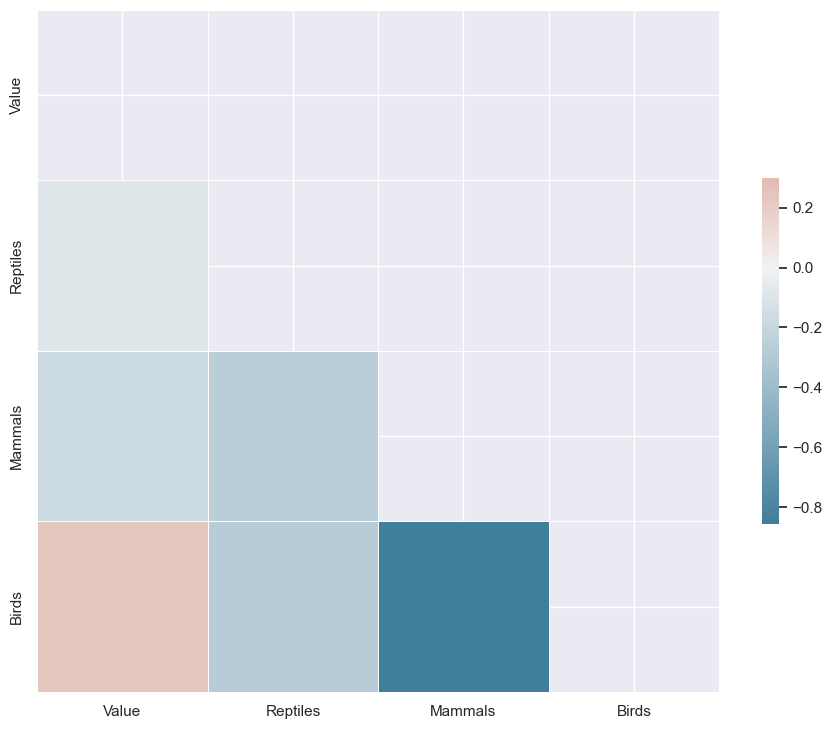
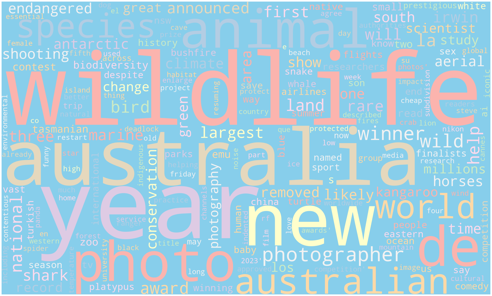
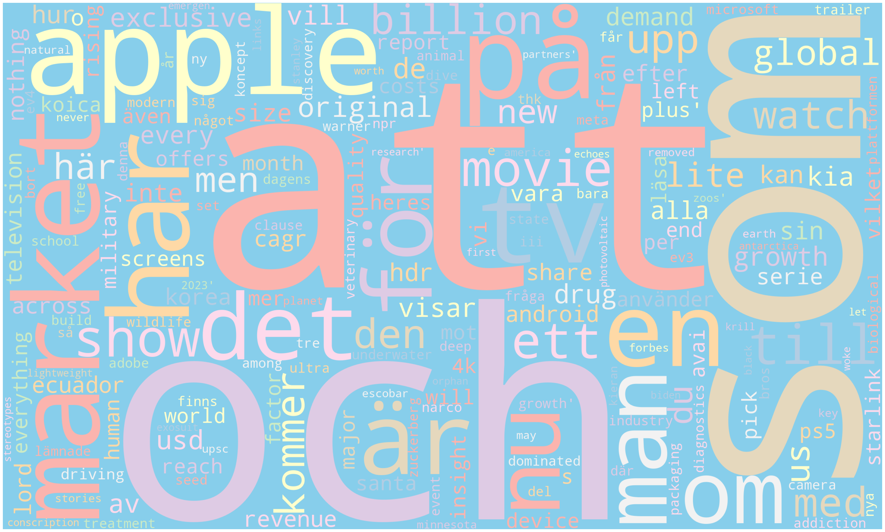
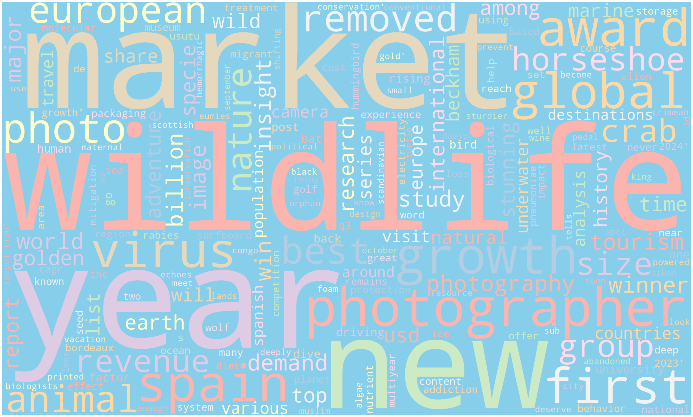

# Import seaborn
import seaborn as sns
import matplotlib.pyplot as plt
import pandas as pd
import numpy as npData Exploration
Introduction
Exploratory Data Analysis (EDA) is a process to explore the data: understand the meaning of data, identify the patterns or outliers, uncoverting the relationship between the data, etc., after gathering and cleaning the data. In this tab, I will deep-dive in two datasets: Wild Life Dataset and Climate Dataset, and will go over the information and visulaize them in order to discover the which data I should use in the future.
Explanation
Main Tools: Python Seaborn, Matplotlib for categorical data. WordCloud for Text data. Since our datasets hold a number of categorical data, Seaborn package is the best option for exploring the data.
Report: We retrieved a meaningful data for ‘Species’ data and the climate data for Australia and Korea. Australia and Korea’s Greenhouse Gas kept increasing from 1990, whereas Spain showed a decreasing tendency in terms of Greenhouse Gas. Therefore, we are going to use other Pollutant for Spain in order to retrieve meaningful data.
Among the species, Birds were the most Threatened species among all especially in Columbia. After grouping the data by countries, we are certain that birds are the most threatened species.
Identifying Outliers: No particular outlier identified, however Spain’s climate data should be changed to other pollutant or other country data.
Hypothesis Generation: Not much changes needed in the questions. However, I changed the countries I will compare based on the information I retrieved from the exploration of data.
Quick look at the data
Wild life data
# Apply the default theme
sns.set_theme()wildlife = pd.read_csv('../data/wild_life_cleaned.csv')
climate = pd.read_csv('../data/climate_cleaned.csv')Data Understanding
Data types
# see the columns of my datasets
print(wildlife.columns)
print(climate.columns)
# see the unique values of the datasets
print(wildlife['IUCN'].unique())
print(climate['Pollutant'].unique())Index(['IUCN', 'IUCN Category', 'SPEC', 'Species', 'COU', 'Country', 'Value'], dtype='object')
Index(['COU', 'Country', 'POL', 'Pollutant', 'VAR', 'Year', 'Value'], dtype='object')
['TOT_KNOWN' 'ENDANGERED' 'CRITICAL' 'VULNERABLE' 'THREATENED'
'THREAT_PERCENT']
['Greenhouse gases' 'Carbon dioxide' 'Methane' 'Nitrous oxide'
'Hydrofluorocarbons' 'Perfluorocarbons' 'Sulphur hexafluoride'
'Nitrogen trifluoride' 'Unspecified mix of HFCs and PFCs']print(wildlife.head())
print(climate.head()) IUCN IUCN Category SPEC Species COU \
0 TOT_KNOWN Total number of known species MAMMAL Mammals AUS
1 ENDANGERED Number of endangered species MAMMAL Mammals AUS
2 CRITICAL Number of critically endangered species MAMMAL Mammals AUS
3 VULNERABLE Number of vulnerable species MAMMAL Mammals AUS
4 THREATENED Total number of threatened species MAMMAL Mammals AUS
Country Value
0 Australia 377.0
1 Australia 41.0
2 Australia 9.0
3 Australia 57.0
4 Australia 107.0
COU Country POL Pollutant VAR Year Value
0 AUS Australia GHG Greenhouse gases TOTAL 1990 438056.76
1 AUS Australia GHG Greenhouse gases TOTAL 1991 438049.29
2 AUS Australia GHG Greenhouse gases TOTAL 1992 441752.18
3 AUS Australia GHG Greenhouse gases TOTAL 1993 442282.48
4 AUS Australia GHG Greenhouse gases TOTAL 1994 442610.56# print out the data types
print(wildlife.info())
print(climate.info())<class 'pandas.core.frame.DataFrame'>
RangeIndex: 2001 entries, 0 to 2000
Data columns (total 7 columns):
# Column Non-Null Count Dtype
--- ------ -------------- -----
0 IUCN 2001 non-null object
1 IUCN Category 2001 non-null object
2 SPEC 2001 non-null object
3 Species 2001 non-null object
4 COU 2001 non-null object
5 Country 2001 non-null object
6 Value 2001 non-null float64
dtypes: float64(1), object(6)
memory usage: 109.6+ KB
None
<class 'pandas.core.frame.DataFrame'>
RangeIndex: 11896 entries, 0 to 11895
Data columns (total 7 columns):
# Column Non-Null Count Dtype
--- ------ -------------- -----
0 COU 11896 non-null object
1 Country 11896 non-null object
2 POL 11896 non-null object
3 Pollutant 11896 non-null object
4 VAR 11896 non-null object
5 Year 11896 non-null int64
6 Value 11896 non-null float64
dtypes: float64(1), int64(1), object(5)
memory usage: 650.7+ KB
NoneWe can see the data type of each of the datasets’ column.
Potential Relationships and Relevance
The data has a high relevance to the aim of this project. The IUCN column of the Wild Life data will be the label when Classification is needed. Also, both datasets share the same column which is ‘Country’. If I can merge both datasets on ‘Country’ column, I would be able to provide more features when training.
Descriptive Statistics
For numerical data:
print(wildlife['Value'].mean())
print(wildlife['Value'].median())
print(wildlife['Value'].mode())
print(wildlife['Value'].std())
print(wildlife['Value'].var())
print(climate['Value'].mean())
print(climate['Value'].median())
print(climate['Value'].mode())
print(climate['Value'].std())
print(climate['Value'].var())579.4227161419291
24.0
0 1.0
Name: Value, dtype: float64
4152.976589218626
17247214.550597973
231440.3739684768
5628.225
0 0.0
Name: Value, dtype: float64
1163081.8754798728
1352759449069.7783For categorical data:
# histogram
# plot of the total number of IUCN: Total, Endangered, Critical, Vulnerable, Threatened, Threat_percent
sns.histplot(
data = wildlife,
x = 'IUCN'
)
:::{.callout-note} Data Cleaning: The graph may be telling us that the total known numbers and the percentage of threatened should be eliminated, but I saved them on purpose for future work.
Data Visualization
df = wildlife.loc[(wildlife['Species'] == 'Mammals') | (wildlife['Species'] == 'Birds') | (wildlife['Species'] == 'Reptiles') & (wildlife['IUCN'] == 'THREATENED')].reset_index(drop=True)# bar graph
sns.set(rc={'figure.figsize': (10, 6)})
sns.barplot(
data = df,
x = 'COU',
y = 'Value',
hue = 'Species'
).set(title = 'Value of Threatened Species(MAM, BIRD, REP) of each Country')
plt.tick_params(axis='x', rotation=90)
plt.xlabel('Country')Text(0.5, 0, 'Country')
# Australia climate change
AUS_climate = climate[(climate['Country'] == 'Australia') & (climate['POL'] == 'GHG')]
sns.relplot(
data = AUS_climate,
x = 'Year',
y = 'Value',
kind = 'line'
).set(title = 'Amount of Greenhouse Gas in Australia for approx. 30 years')/Users/hannahkim/opt/anaconda3/envs/dsan5000/lib/python3.11/site-packages/seaborn/axisgrid.py:123: UserWarning: The figure layout has changed to tight
self._figure.tight_layout(*args, **kwargs)
# Korea climate change
KOR_climate = climate[(climate['Country'] == 'Korea') & (climate['POL'] == 'GHG')]
sns.relplot(
data = KOR_climate,
x = 'Year',
y = 'Value',
kind = 'line'
).set(title = 'Amount of Greenhouse Gas in Korea for approx. 30 years')/Users/hannahkim/opt/anaconda3/envs/dsan5000/lib/python3.11/site-packages/seaborn/axisgrid.py:123: UserWarning: The figure layout has changed to tight
self._figure.tight_layout(*args, **kwargs)
# Spain climate change
KOR_climate = climate[(climate['Country'] == 'Spain') & (climate['POL'] == 'GHG')]
sns.relplot(
data = KOR_climate,
x = 'Year',
y = 'Value',
kind = 'line'
).set(title = 'Amount of Greenhouse Gas in Spain for approx. 30 years')/Users/hannahkim/opt/anaconda3/envs/dsan5000/lib/python3.11/site-packages/seaborn/axisgrid.py:123: UserWarning: The figure layout has changed to tight
self._figure.tight_layout(*args, **kwargs)
Results:
Based on the change of the greenhouse gas amount, Australia and Korea data will give us meaningful results. For Spain, I will use other pollutant kind that will give me useful results. Mayby Spain is one of the Kyoto Protocol, Paris Climate Accords, Agreement.
df['Reptiles'] = (df['Species'] == 'Reptiles').astype(int)
df['Mammals'] = (df['Species'] == 'Mammals').astype(int)
df['Birds'] = (df['Species'] == 'Birds').astype(int)df| IUCN | IUCN Category | SPEC | Species | COU | Country | Value | Reptiles | Mammals | Birds | |
|---|---|---|---|---|---|---|---|---|---|---|
| 0 | TOT_KNOWN | Total number of known species | MAMMAL | Mammals | AUS | Australia | 377.000 | 0 | 1 | 0 |
| 1 | ENDANGERED | Number of endangered species | MAMMAL | Mammals | AUS | Australia | 41.000 | 0 | 1 | 0 |
| 2 | CRITICAL | Number of critically endangered species | MAMMAL | Mammals | AUS | Australia | 9.000 | 0 | 1 | 0 |
| 3 | VULNERABLE | Number of vulnerable species | MAMMAL | Mammals | AUS | Australia | 57.000 | 0 | 1 | 0 |
| 4 | THREATENED | Total number of threatened species | MAMMAL | Mammals | AUS | Australia | 107.000 | 0 | 1 | 0 |
| ... | ... | ... | ... | ... | ... | ... | ... | ... | ... | ... |
| 445 | THREATENED | Total number of threatened species | REPTILE | Reptiles | LTU | Lithuania | 2.000 | 1 | 0 | 0 |
| 446 | THREAT_PERCENT | Threatened species as % of known species | MAMMAL | Mammals | LTU | Lithuania | 10.294 | 0 | 1 | 0 |
| 447 | THREAT_PERCENT | Threatened species as % of known species | BIRD | Birds | LTU | Lithuania | 14.396 | 0 | 0 | 1 |
| 448 | CRITICAL | Number of critically endangered species | BIRD | Birds | LTU | Lithuania | 19.000 | 0 | 0 | 1 |
| 449 | CRITICAL | Number of critically endangered species | MAMMAL | Mammals | CRI | Costa Rica | 1.000 | 0 | 1 | 0 |
450 rows × 10 columns
# wildlife
# climate
# AUS_climate
# KOR_climate
df_corr = df[['Value', 'Reptiles', 'Mammals', 'Birds']]
corr = df_corr.corr()
mask = np.triu(np.ones_like(corr, dtype=bool))
# Set up the matplotlib figure
f, ax = plt.subplots(figsize=(11, 9))
# Generate a custom diverging colormap
cmap = sns.diverging_palette(230, 20, as_cmap=True)
# Draw the heatmap with the mask and correct aspect ratio
sns.heatmap(corr, mask=mask, cmap=cmap, vmax=.3, center=0,
square=True, linewidths=.5, cbar_kws={"shrink": .5})
Based on the heatmap, Birds are the most affected Species in terms of Value and Reptiles were more affected by Value compared to Mammals.
Word Cloud for Text Data
—– Word Cloud for Text Data —-
# import packages
import requests
import json
import re
import pandas as pd
from sklearn.feature_extraction.text import CountVectorizer
import numpy as np
import wikipedia# word cloud generation function
def generate_word_cloud(my_text):
from wordcloud import WordCloud, STOPWORDS
import matplotlib.pyplot as plt
def plot_cloud(wordcloud):
plt.figure(figsize=(40,30))
plt.imshow(wordcloud)
plt.axis("off")
# generate a word cloud
wordcloud = WordCloud(
width=2500,
height=1500,
random_state=1,
background_color='skyblue',
colormap='Pastel1',
collocations=False,
stopwords=STOPWORDS).generate(my_text)
plot_cloud(wordcloud)
plt.show()baseURL = "https://newsapi.org/v2/everything?"
total_requests = 3
verbose = True
API_KEY='a078005c866644ab8dce1c6637ec465f'
# There were more text data: to 29 countries, but I will explore three text data sample for the sake of simplicity.
COU_1 = 'Australia Wildlife'
COU_14 = "Korea Wildlife"
COU_25 = "Spain Wildlife"text_list = []
# Australia Wildlife
URLpost_1 = {'apiKey': API_KEY,
'q': '+'+ COU_1,
'sortBy': 'relevancy',
'totalRequests': 1}
response_1 = requests.get(baseURL, URLpost_1)
response_1 = response_1.json() # extract the text data from request into json
# Korea Wildlife
URLpost_2 = {'apiKey': API_KEY,
'q': '+'+ COU_14,
'sortBy': 'relevancy',
'totalRequests': 1}
response_2 = requests.get(baseURL, URLpost_2)
response_2 = response_2.json() # extract the text data from request into json
# Spain Wildlife
URLpost_3 = {'apiKey': API_KEY,
'q': '+'+ COU_25,
'sortBy': 'relevancy',
'totalRequests': 1}
response_3 = requests.get(baseURL, URLpost_3)
response_3 = response_3.json() # extract the text data from request into json# function to clear string
def string_cleaner(input_string):
try:
out=re.sub(r"""
[,.;@#?!&$-]+ # Accept one or more copies of punctuation
\ *
""",
" ",
input_string, flags=re.VERBOSE)
out=re.sub('[’.]+', '', input_string)
out=re.sub(r'\s+', ' ', out)
out=out.lower()
except:
print("ERROR")
out=''
return outarticle_list_1=response_1['articles']
article_keys=article_list_1[0].keys()
index=0
cleaned_data_1=[];
for article in article_list_1:
tmp=[]
for key in article_keys:
if(key=='title'):
tmp.append(string_cleaner(article[key]))
if(key=='description'):
tmp.append(string_cleaner(article[key]))
cleaned_data_1.append(tmp)
index+=1df_1 = pd.DataFrame(cleaned_data_1)
# save the clean data to a file
df_1.to_csv('../data/aus_wildlife.csv', index=False)
title = str(np.array(df_1[0]))
description = str(np.array(df_1[1]))
topic_1 = title + descriptionarticle_list_2=response_2['articles']
article_keys=article_list_2[0].keys()
index=0
cleaned_data_14=[];
for article in article_list_2:
tmp=[]
for key in article_keys:
if(key=='title'):
tmp.append(string_cleaner(article[key]))
if(key=='description'):
tmp.append(string_cleaner(article[key]))
cleaned_data_14.append(tmp)
index+=1df_14 = pd.DataFrame(cleaned_data_14)
# save the clean data to a file
df_14.to_csv('../data/kor_wildlife.csv', index=False)
title = str(np.array(df_14[0]))
description = str(np.array(df_14[1]))
topic_14 = title + descriptionarticle_list_3=response_3['articles']
article_keys=article_list_3[0].keys()
index=0
cleaned_data_25=[];
for article in article_list_3:
tmp=[]
for key in article_keys:
if(key=='title'):
tmp.append(string_cleaner(article[key]))
if(key=='description'):
tmp.append(string_cleaner(article[key]))
cleaned_data_25.append(tmp)
index+=1df_25 = pd.DataFrame(cleaned_data_25)
# save the clean data to a file
df_25.to_csv('../data/spain_wildlife.csv', index=False)
title = str(np.array(df_25[0]))
description = str(np.array(df_25[1]))
topic_25 = title + descriptiongenerate_word_cloud(topic_1)
generate_word_cloud(topic_14)
generate_word_cloud(topic_25)

